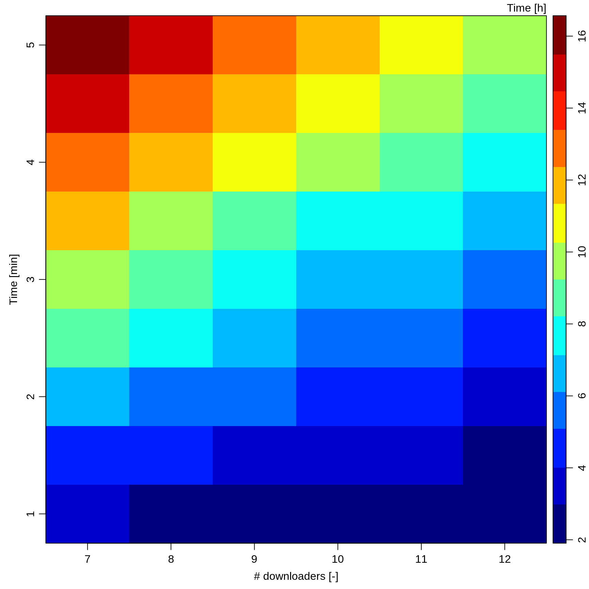
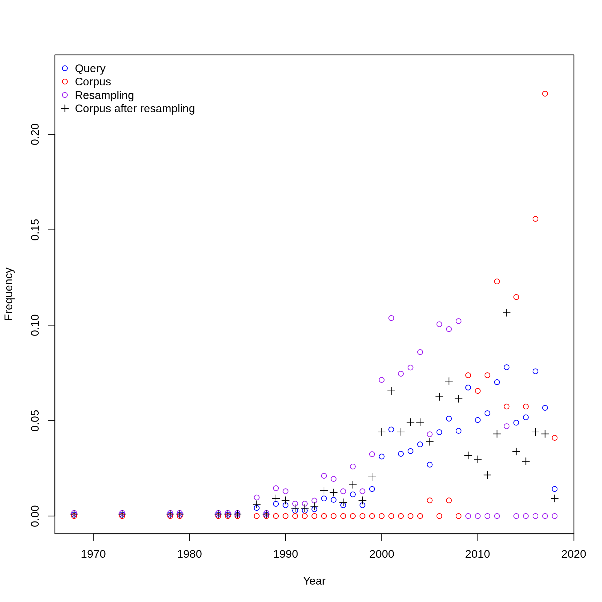
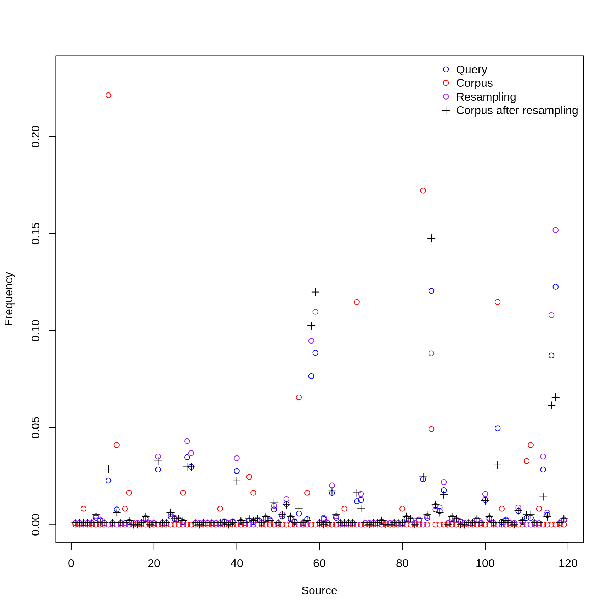
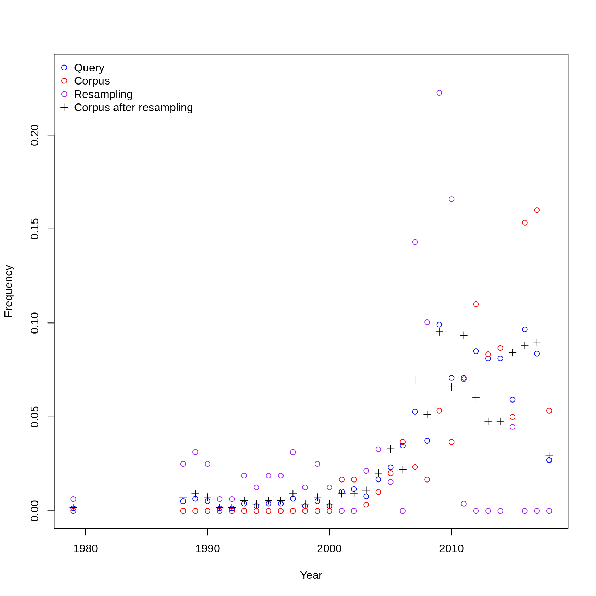
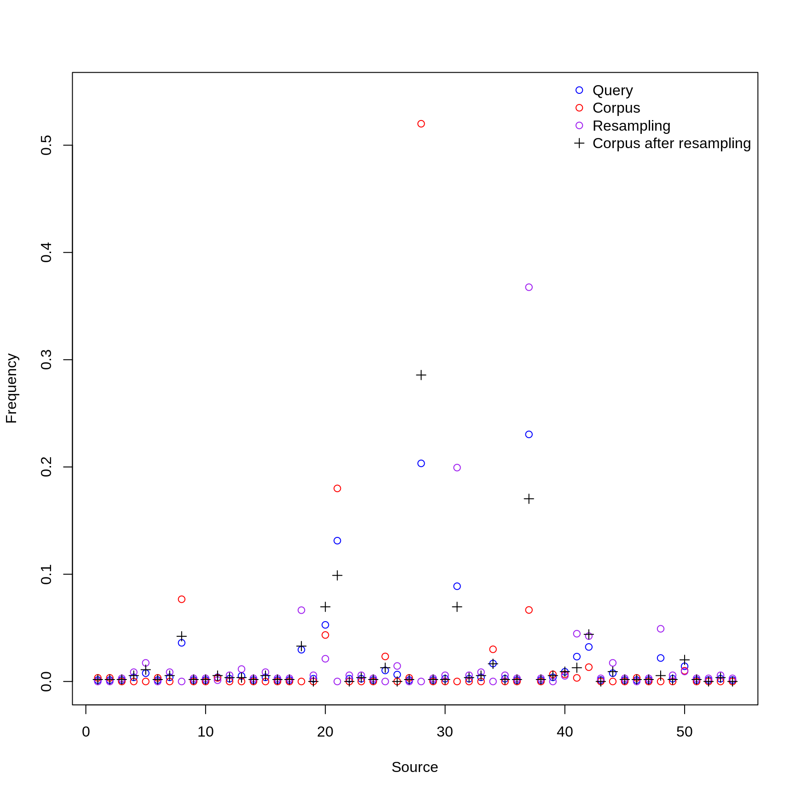

manual_download.Rmdlibrary(wateReview)
languages <- c("english", "portuguese", "spanish") load(file = system.file("extdata", "language_dfs.rda", package = "wateReview"))
We first obtain the baseline_pct of collected documents from the English corpus and derive the numbers of articles to collect for the other corpi in order to match that return rate.
baseline_pct <- table(language_dfs$english$collected)[["in corpus"]] / nrow(language_dfs$english) n_spanish <- ceiling(baseline_pct * nrow(language_dfs$spanish)) - table(language_dfs$spanish$collected)[["in corpus"]] n_portuguese <- ceiling(baseline_pct * nrow(language_dfs$portuguese)) - table(language_dfs$portuguese$collected)[["in corpus"]] n <- list(spanish = 1.2 * n_spanish, portuguese = 1.2 * n_portuguese) N <- sum(unlist(n))
This heatmap was helpful to budget the time slots for manually downloading the target number of 1390 documents.

The following plot shows the distribution over time and sources for the target corpus and correct for bias.
spanish_samples <- get_samples("spanish", n_spanish, pl = TRUE)

portuguese_samples <- get_samples("portuguese", n_portuguese, pl = TRUE)

Using assign_articles_to_players() creates a set of folders, one per downloader, along with csv files with the information needed to manually look-up and download the documents.
n_players <- 12
assign_articles_to_players("spanish", number_of_players = n_players)
assign_articles_to_players("portuguese", number_of_players = n_players)Once the missing document have been downloaded, update_database() checks which documents have been retrieved and mark them as in corpus.
language_dfs <- update_database("spanish", language_dfs)
language_dfs <- update_database("portuguese", language_dfs)